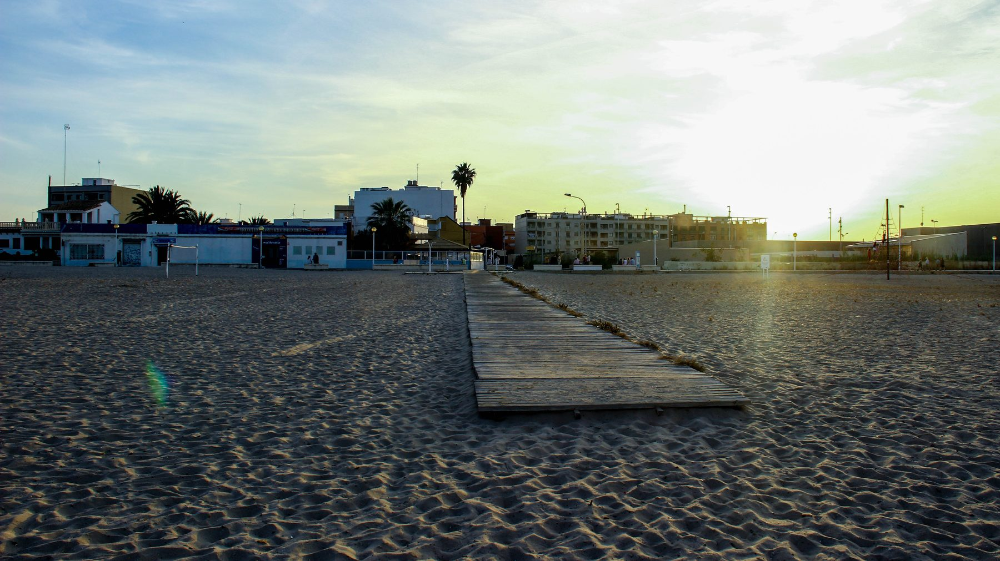
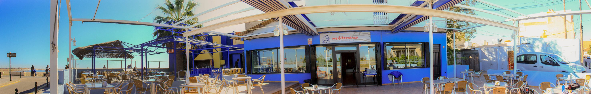

Contacte
Contacte
Estem a la platja de Pinedo, al sud de València. Reserves per telèfon.
- On som
- Travessia Pinedo al Mar, 88
46013 València
Al costat del Parc Natural de l'Albufera.
Buscar a Google Maps → - Telèfon
- 96 324 71 45
- Horari
- Diumenge, de 9.00 a 1.00 h.
Dilluns a dimecres, de 9.00 a 19.00 h.
Dijous a dissabte, de 9.00 a 1.00 h. - Xarxes
- Facebook: Mediterraneoplatja
